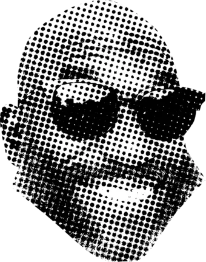
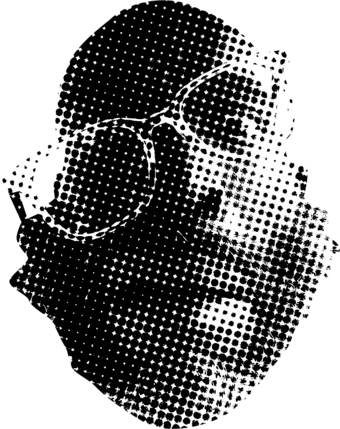

More than a list of projects, this page has become a map of my journey from novice to expert in the new domain of AI Engineering.
After more than 15 years in tech roles, I became a novice once again back in January of 2025. Driven by curiosity and stubbornness, I've emerged out the other end with an entirely new skill stack.
The work
A story in four parts

Peak of Mt. Stupid
memory.audio
"Learn anything in a week" was the pitch. Working the floor at Amazon's CLE2 warehouse, I needed something to keep my mind alive through 12-hour shifts, so I built it: an app that generated audio lessons on whatever I was chasing (game theory, information theory, the Model of Hierarchical Complexity, investing) and looped them all night. My first AI-built app, and the first thing I shipped to strangers.
Leverage · the move
I deployed it, and building in public on X turned a private habit into a product. It reached about 100 people generating their own lessons. Getting it online was the real unlock: the audience became the engine that pulled the next round of features forward.
Unintended consequences · the ripple
Chasing the idea pulled me into real research (memory span, information theory), and that research drove the build: cognitive assessments grounded in memory-science frameworks, then a multi-voice podcast format. Somewhere in there I realized I'd built a tool to program my own attention. memory.audio lessons became the bulk of my information diet, and it compounded.
Constraint · the wall
The real wall was economics: with no business model, it stayed an expensive hobby. I briefly wrote it off as "a worse NotebookLM," but that's wrong. Nothing else trains and measures your memory or deliberately shapes your attention; the specificity was the edge. I just hadn't built a way to capture value from it. A focused retool as an LLM skill is on the list.
No live page

Valley of Despair
sceneSprint
A 24-hour hackathon build that matches your webcam to a famous movie poster. It's where abstract ML got concrete for me, and where I learned the sharpest lesson about building with coding agents.
Leverage · the move
Coding agents. I let AI do the building and had a working computer-vision app running in a few hours. But the more durable win was the workflow it forced into focus: use the LLM as a thought partner to shape the end experience, then step back and study the domain (its established mental models, the frameworks already rooted there, what's already been shipped). Design the process to deliver the result, then write the PRDs, dispatch to the agents, and carefully merge the pieces into a whole.
Unintended consequences · the ripple
Fast progress bred dangerous confidence. An hour before the deadline I had a rough (very rough) matcher and, at peak hubris, tore into the pipeline to "improve" it, badly overestimating how well I understood the agent-written code. It blew up. I spent twenty minutes spiraling and walked into the demo with nothing to show.
Constraint · the wall
The post-mortem was the real prize. The matches were weak because I'd hand-picked the features on assumptions (pose estimation, color analysis), so the model was only ever as good as my guesses. I didn't yet know what a sparse encoder was, or that I was rediscovering the Bitter Lesson. Now I do: stop imposing your priors, and let the system learn the representation straight from the data.
App blockers are a crowded but lucrative segment, so this time I took the advice of more successful builders: don't reinvent the wheel, start from a proven segment and a real business model. Fidget Feed swaps the doomscroll for interactive fidgets, and it's the first thing I built to earn, not just to learn.
Leverage · the move
The unlock was Android Studio plus an agent. The first time I dropped a high-fidelity Figma mock into the chat and it returned a functional UI screen, the game changed. I designed the entire UI in Figma and built it with the agent, only dropping into the code when Copilot got stuck in a bug-fixing loop (a designer's control over the product at an engineer's output).
Unintended consequences · the ripple
I set out to earn, and instead I mapped the entire action-space of shipping a product. A year of touching every surface that isn't code or design: a landing page and lead capture, three social channels, UGC experiments, exhaustive market research, even a micro-niche I named "fidget-blockers." I now understand the 90% of a product that has nothing to do with building it.
Constraint · the wall
The one thing I never designed for was the people. Google requires a dozen real humans to run a 14-day closed beta before you can publish, and coordinating twelve specific strangers turned out to be harder than any of the engineering. The build was never the bottleneck; the humans were. That realization is the seed of what came next.
At a time when rideshare drivers in Cleveland were facing often-fatal violence, I was assaulted by a passenger at 2 a.m. on a Friday. It could have been far worse, but what shook me most was the aftermath: the indifference of the local police, and a Lyft safety team that tried to route my very next ride offer back into the same neighborhood. RedLine is the feature Lyft would never ship: drivers filter ride offers by geofencing the areas they want to avoid.
Leverage · the move
RedLine is free, with no business model, but I built it to reach drivers, and the rideshare subreddits connected me straight to the community it's for. The real leverage was the reason it exists: my earlier projects were fascinations, but RedLine has a mission, and that changed how it landed.
Unintended consequences · the ripple
The core value is the go/no-go filter, but capturing each pickup and dropoff to check against a driver's geofences quietly produces something the Lyft app never gives drivers: a detailed, personal ride log. I've used mine to win disputes with customer support, and the dataset turns out to be exactly what you'd want to train a ride-scoring classifier. A safety filter became a data product.
Constraint · the wall
The clever part is also the risky part. RedLine reads the Lyft app's actual UI components through Android's accessibility APIs (far more reliable than OCR-ing pixels), but that same approach makes Play Store approval an open question. The capability and the compliance risk are the same feature.
If you had a programmable network of human actuators, completing any real-world task would be as simple as an API call. That's NPC. I'm exploring what AI does to labor markets when you can dispatch and verify physical work like software. The #BuildWithGemini XPRIZE is the forcing function: real progress, and real distribution.
Leverage · the move
The move was to stop thinking about software and get out into the world. Less brainstorming, more shipping toward one specific outcome ("upload an image, and a human street team spreads the idea in sticker form across town"), then problem-solve forward, document the effort, publish the video. Each tight cycle has driven the project deeper into real-world specificity.
Unintended consequences · the ripple
Building forward with AI as a thought partner sharpened the focus from labor to proof. The real hypothesis: the layer where AI verifies the work (that a shelf really is out of stock, that the task really happened) is the product. NPC became less "people doing things" and more a system that produces verified truth about the physical world.
Constraint · the frontier
The frontier now is customers. That demands specificity, so I'm going deep on retail execution, preparing a paid pilot while hardening the CV pipeline that makes the verification trustworthy. The question stopped being "can I build it" and became "can I make it trustworthy enough to bet a business on."